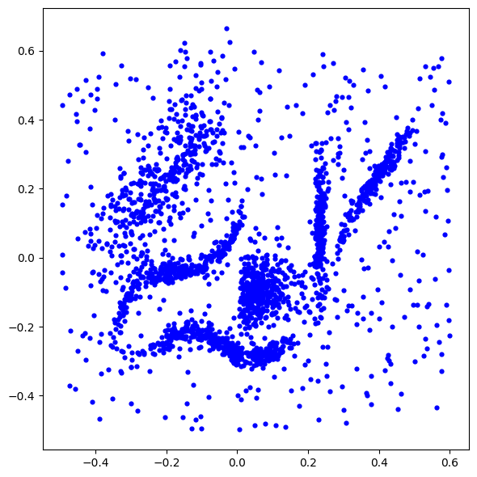

TP Classification#
import numpy as np
import matplotlib
import matplotlib.pyplot as plt
%matplotlib inline
import warnings
warnings.filterwarnings("ignore")
Nuage de points à analyser#
data = np.load('./data/classification.npy')
plt.figure(figsize=(6,6))
plt.scatter(data.T[0], data.T[1], c='b', s = 20, linewidths=0)
plt.tight_layout()

Votre travail#
Classer ce nuage de points avec les algorithmes vus en cours :
Pour ces méthodes, vous déterminerez le nombre optimal de classes. Vous experimenterez divers paramètres (initialisation des centres, liens min, max, lien de Ward,…). Vous pourrez évaluer la qualité de la partition en utilisant l’indice de silhouette